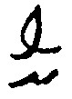
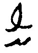
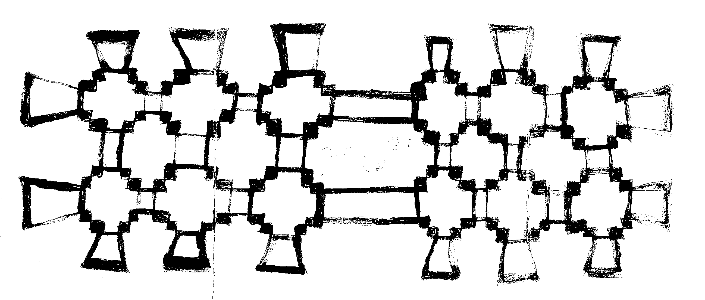
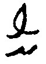

⊛ تامَسْ عُوءِنْIV ⊛ ماسَه عُوءِنْ ⊛V
ميره عُوءِنْVI1
|5| شفَاي عُوءِنْVII ⊛ ذُون عُوءِنْVIII ⊛ ماکِتْ عُوءِنْ ⊛IX
|6| لَيسَهْ عُوءِنْ ⊛ ⊛ ⊛ ⊛X
⊛ تامَسْ عُوءِنْIV ⊛ ماسَه عُوءِنْ ⊛V
ميره عُوءِنْVI1
|5| شفَاي عُوءِنْVII ⊛ ذُون عُوءِنْVIII ⊛ ماکِتْ عُوءِنْ ⊛IX
|6| لَيسَهْ عُوءِنْ ⊛ ⊛ ⊛ ⊛X
[جـ 1 صـ 1و]
|1| ⊛I
|2| سیدي يسمى ذیم عُوءِنْII
|3| بِتسِه عُوءِنْIII ⊛ تامَسْ عُوءِنْIV ⊛ ماسَه عُوءِنْ ⊛V
ميره عُوءِنْVI1
|5| شفَاي عُوءِنْVII ⊛ ذُون عُوءِنْVIII ⊛ ماکِتْ عُوءِنْ ⊛IX
|6| لَيسَهْ عُوءِنْ ⊛ ⊛ ⊛ ⊛X
1 class='fntMrkrCmt'>VIin marg [.
I ⊛] This figure is significantly damaged, and it is replaced by an equivalent.
II 9 سیدي يسمى] Jim Owen.
III بِتسِه عُوءِنْ] Betsy Owen.
IV تامَسْ عُوءِنْ] Thomas Owen.
V ماسَه عُوءِنْ] Martha Owen.
VI ميره عُوءِنْ] Mary Owen.
VII شفَاي عُوءِنْ] Sophia Owen.
VIII ذُون عُوءِنْ] John Owen.
IX ماکِتْ عُوءِنْ] Margaret Owen.
X لَيسَهْ عُوءِنْ] Eliza Owen.